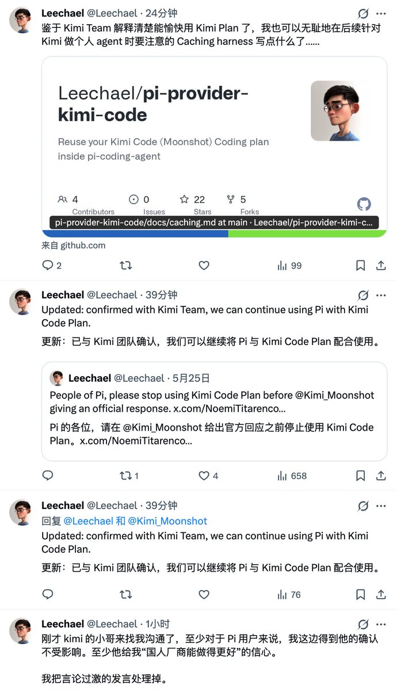
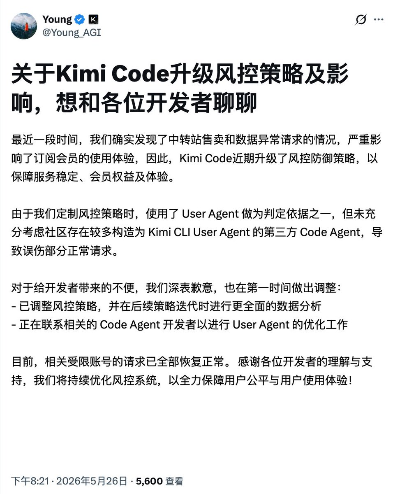

奶昔🥤
@realNyarime
我认为Kimi单纯是飘了，学Anthropic玩直接封号，好歹人家A\的Claude屌直接封还退款，而Kimi是既封号又不退款的
更可笑的是，他们的风控逻辑就是拿UA去判断，正常来说应该给用户发个邮件提醒异常行为再风控。很难想象Kimi的后端有没有正常人，换个正经的实习生也不会干出如此愚蠢的事情
嘿，你联系错了Moonshot支持团队，你需要联系Kimi支持团队！


思维怪怪
@0xLogicrw
月之暗面旗下 Kimi Code 团队与开源社区于 5 月 26 日晚达成和解，彻底平息了封号事件引发的订阅风控与公关双标危机。开源开发者 Leechael 宣布删除早前言论过激的发言，并确认 pi-provider-kimi-code 插件将继续维护。付费订阅会员未来可在 Pi Coding Agent 等第三方工具中继续安全使用 Kimi Code https://t.co/hFBK3HmdVi https://t.co/3NWHTUSHe8